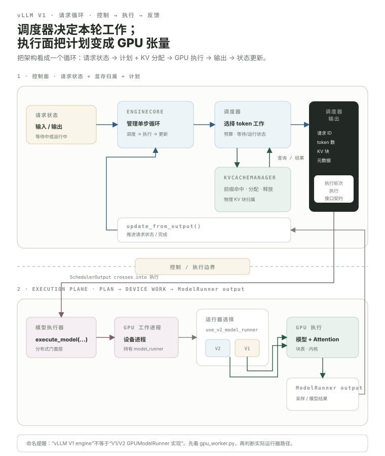

vLLM Architecture：先顺着一个 request 走完系统，再读任何一个大文件。
vLLM 的代码量已经很大，直接打开某个 ModelRunner 或 scheduler.py 很容易迷路。最好的入口不是“哪个文件最核心”，而是先回答：一个请求进入 EngineCore 后，谁决定本轮算多少 token？谁分配 Key-Value (KV，键-值) blocks？谁把计划变成 Graphics Processing Unit (GPU，图形处理器) tensors？结果怎样回到 scheduler，让同一个请求在下一轮继续前进？
- 把 vLLM V1 粗分成请求/控制层、调度与 KV 管理层、执行层。
- 知道
EngineCore、Scheduler、KVCacheManager、executor/worker、GPUModelRunner的职责边界。 - 理解
SchedulerOutput为什么是“控制层给执行层的本轮计划”。 - 知道 model execution 完成后，
ModelRunnerOutput还要通过scheduler.update_from_output(...)更新 request 状态。 - 区分“Request 的逻辑状态”与“GPU 上真正执行的 tensor batch”。
- 知道当前 GPU worker 会在 V2/V1 ModelRunner 实现之间选择，源码阅读先看 selector，再进 runner。
把 vLLM 先看成一个闭环：控制平面决定工作，执行平面把计划变成 GPU 工作，结果再回来改 request state。
下面这张图只保留第一次读源码最重要的边界。上半部分是 request state、调度与 KV ownership；下半部分是 executor/worker/runner 与 GPU execution。中间真正穿过边界的是 SchedulerOutput，而执行完成后的结果必须回到 update_from_output 才算闭环。

SchedulerOutput 向下把“这一轮要做什么”交给执行层；ModelRunnerOutput 向上把“这一轮做出了什么”交回状态机。KVCacheManager 则留在 scheduler 一侧，负责把逻辑 token 进度约束到真实 physical block capacity。这张图故意没有把 Application Programming Interface (API，应用程序编程接口) server、tokenizer、structured output、speculative decoding、multimodal、distributed executor 的所有细节都塞进来。架构图首先回答 ownership 和调用边界；复杂 feature 以后再挂到这个骨架上。
先分清“决定算什么”和“真正把 tensor 算掉”。
这条边界很重要。以后你看到一个性能问题，要先判断它发生在 scheduler 的决策、Central Processing Unit (CPU，中央处理器)→GPU metadata 准备，还是实际 CUDA kernel 执行。三种问题的优化方向完全不同。
EngineCore.step() 把 schedule → execute → update 串成一次 engine iteration。
当前 vLLM V1 的 vllm/v1/engine/core.py 可以直接看到：有请求时先调用 scheduler.schedule(...)，把得到的 scheduler_output 交给 model_executor.execute_model(..., non_block=True)；模型结果回来后，再调用 scheduler.update_from_output(scheduler_output, model_output)。这不是教学伪代码，而是当前主循环的实际骨架。
EngineCore.step() 中的 schedule → execute_model → update_from_output 三个调用。Scheduler 不负责 GEMM；它负责告诉执行层“这一轮应该怎么组工作”。
Scheduler 的核心产物不是一串 CUDA kernel，而是一份本轮计划。它表达哪些 requests 是新来的/已经缓存的、每个请求要推进多少 token、KV block state、可能的 encoder input、spec decode 信息等。
waiting / running / cachedtoken + KV budgetsSchedulerOutput把它理解成“控制平面与设备执行之间的 contract”最有用。之后读 ModelRunner，只需要继续追问：这份 request-level plan 怎样变成 input tensors、block tables 和 attention metadata？
Scheduler 想推进 token，必须先证明“有地方放这些 token 的 KV”。
当前 V1 的 KVCacheManager 是 scheduler 一侧的内存管理组件。它回答 prefix 命中、已有 computed blocks、新 block allocation 与 free；Scheduler 再据此决定本轮 request 能否真的推进。
不要再把 GPUModelRunner 绑定到一个永久文件名。
当前 vllm/v1/worker/gpu_worker.py 保存 self.use_v2_model_runner = vllm_config.use_v2_model_runner。构造 runner 时，为 true 会导入 vllm/v1/worker/gpu/model_runner.py 的 GPUModelRunner；否则导入 vllm/v1/worker/gpu_model_runner.py 的旧 V1 runner。两条实现会继续演化，但稳定职责仍是：把 SchedulerOutput 变成设备执行所需 tensors/metadata 并运行模型。
当前两条 runner 都位于 vllm/v1/worker/ 体系里。源码阅读必须先看 gpu_worker.py 的 selector，再进入当前配置真正使用的 runner。
第一次打开 vLLM，只先认这些职责和入口。
vllm/v1/core/sched/scheduler.pywaiting/running、token budget、KV allocation、preemption、connector hooks。打开源码 ↗vllm/v1/core/kv_cache_manager.pycomputed blocks、allocation、free、prefix cache 相关接口。打开源码 ↗vllm/v1/core/block_pool.pyfree block queue、hashed block lookup、物理 block 生命周期。打开源码 ↗worker/gpu/model_runner.py · worker/gpu_model_runner.py先由 selector 决定实际路径，再追 batch / model / KV / attention execution state。V2 runner ↗ · V1 runner ↗worker/gpu/input_batch.py · worker/gpu/block_table.py
worker/gpu_input_batch.py · worker/block_table.pyV2 与旧 V1 各有自己的 batch / block-table 实现；沿被选中的 runner imports 继续读，不要混拼。V2 input ↗ · V2 tables ↗ · V1 input ↗ · V1 table ↗vLLM 变化很快，所以课程不要求你死记目录永久不变。真正要带走的是职责关系。即使未来文件继续拆分，request state → schedule → KV allocation → execution metadata → model run → update 这条系统链仍然是读代码最可靠的索引。
最后用一个 1000-token prompt，把前面的组件串一次。
先会画职责边界，再继续看 scheduler。
scheduler.schedule() 生成计划 → model_executor.execute_model() 执行 → scheduler.update_from_output() 把结果写回 request state。use_v2_model_runner 在 V2 与旧 V1 runner 实现之间选择。直接背一个文件路径可能读到并非当前配置使用的实现。本课出现的缩写与术语
第一次在正文使用时采用 English Full Name (ABBR，中文名)；这里集中复习，避免学习时来回跳总站 Glossary。
| 缩写 | English full name | 中文名 | 本课怎么理解 |
|---|---|---|---|
KV | Key-Value | 键-值 | 自回归 Attention 需要复用的历史 Key/Value 状态。 |
GPU | Graphics Processing Unit | 图形处理器 | 大模型训练与推理中执行 GEMM、Attention 等高并行计算的主要设备。 |
API | Application Programming Interface | 应用程序编程接口 | 软件组件之间约定的调用接口；源码阅读时先看 contract，再看实现。 |
CPU | Central Processing Unit | 中央处理器 | 主要承担 Python 控制流、调度、数据准备与部分通信控制。 |
CUDA | CUDA | NVIDIA GPU 并行计算平台 | 官方产品名，没有应当强行展开的现代英文全称；本课按 CUDA 平台/编程栈理解。 |